Admin UI — Floor Manager User Guide
This guide walks you through every page of the GenX admin interface, written for someone who has never operated a dialer before. It covers what each screen does, what every field means, and step-by-step instructions for the jobs you'll do every day: managing agents, running campaigns, loading leads, staying compliant, and pulling reports.
Welcome
The GenX platform is an outbound and inbound call center dialer. In plain terms: you load lists of phone numbers (leads) into the system, the system dials them automatically, and when a real person answers, the call is instantly connected to one of your agents. The admin UI you're reading about is the control panel for all of that — your agents use a separate agent screen to take calls.
As a floor manager your account belongs to the ADMIN group. You can manage day-to-day operations — agents, campaigns, leads, inbound routing, reports and recordings — while system-level settings (servers, carriers, phones, user groups) are handled by your system administrator. If a button or page mentioned by a colleague isn't visible to you, that's why: see What You Can't Do.
Dialer Concepts in Plain English
Ten terms cover almost everything. Skim these now — every page in this guide builds on them.
- Lead
- One phone number plus the person attached to it (name, address, notes, call history). Leads are what the dialer dials.
- List
- A batch of leads, usually one file you loaded. Every lead lives in exactly one list, and each list is attached to one campaign. Lists can be turned on (dialable) or off.
- Campaign
- A calling project: which lists to dial, how fast, during which hours, and with what recording rules. Agents log in to a campaign to take its calls.
- Hopper
- The campaign's short queue of "next numbers to dial." The system continuously refills it from the campaign's active lists. If the hopper is empty, nothing dials — usually a sign your lists are off, empty, or fully worked through.
- Dial Level / Ratio
- How many phone lines the dialer runs per waiting agent. At level 1.0 it dials one number per free agent (safe). At 3.0 it dials three, expecting most calls to go unanswered. Set it too high and answered calls have no agent available — those are drops, which are bad for customers and for compliance.
- Status
- The outcome code stamped on a lead after each call — e.g.
NEW(never called),NA(no answer),SALE,DNC. Statuses drive reports and decide whether a lead gets called again. - In-Group (Inbound Group)
- A waiting queue for incoming calls. When customers call you, the in-group decides which agents can take the call, the hold behavior, and what happens if nobody is available.
- DID
- A phone number that customers can dial to reach you ("Direct Inward Dialing"). Each DID has a routing rule — typically "send callers to in-group X" or "play call menu Y."
- DNC
- The Do-Not-Call list. Numbers on it are never dialed. Keeping this accurate is a legal requirement, not a preference.
- Recording
- Audio of a call, saved for quality review and disputes. Campaigns control when recording happens (always, on demand, never).
Signing In
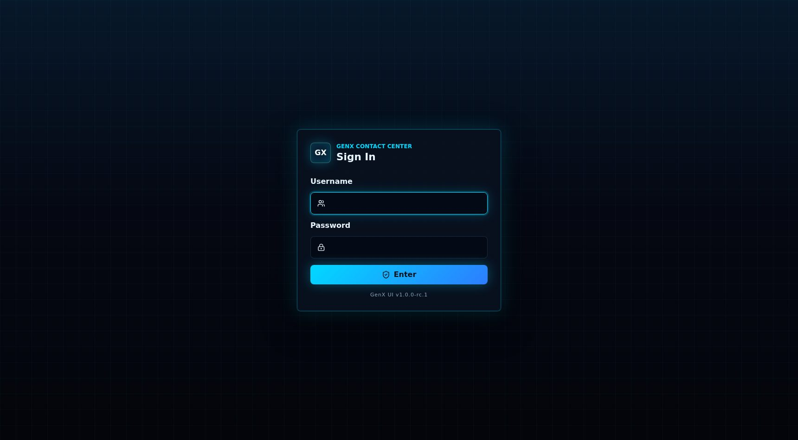
The Mission Control sign-in screen.
- Open the admin address your administrator gave you in Chrome or Edge. It looks like
https://admin.<your-domain>/genx/. - Enter the Username and Password you were issued, then click Enter.
- You land on the Command dashboard (next section).
If you can't log in
Check that your browser didn't auto-fill someone else's username. If the login is rejected, your account may be inactive or your password may have been reset — contact your system administrator. Accounts also need admin level (7+); regular agent accounts cannot open this UI.
Finding Your Way Around
Every page shares the same frame:
| Area | What it does |
|---|---|
| Header bar | Shows your name and level (top right), database status (DB Online), a refresh button, and the logout button (the arrow icon, far right). |
| Sidebar | Navigation, grouped into Users, Campaigns, Lists, Inbound and Reports. The highlighted entry is the page you're on. |
| Workspace strip | Under the page title: last-updated time, and on the Command page a date range picker (Today / 7 Days / 30 Days), an auto-refresh countdown, and links to the API Docs and this User Guide. |
| Action bar | Most pages have a blue button top-right (e.g. + Add List) when you're allowed to create that type of item. |
Two habits worth forming
1) Rows with a Manage button open an editor — that's how you change things. 2) After saving, watch the page refresh; if your change doesn't appear, hard-refresh the browser (Ctrl+F5) before assuming it failed.
Mission Control (Command)Live Operations
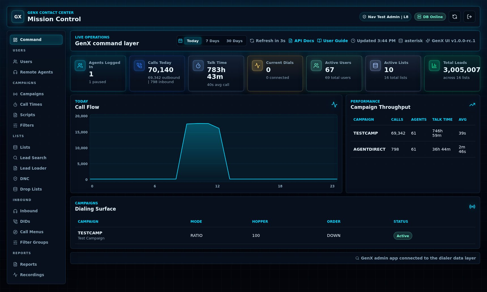
The Command dashboard — your live view of the floor.
This is your home page and the screen worth keeping open during the day. It refreshes itself every few seconds (see the "Refresh in…" countdown).
The seven cards
| Card | Meaning |
|---|---|
| Agents Logged In | How many agents are on the system right now, and how many of them are paused (logged in but not taking calls). |
| Calls Today | Total calls for the selected range, split outbound / inbound. |
| Talk Time | Total minutes agents spent talking, plus the average call length. |
| Current Dials | Calls the dialer has in flight right now, and how many are connected to agents. If agents are waiting but this stays at 0, dialing has stalled — check that your campaign is Active and its lists are on. |
| Active Users | Admin/agent accounts currently marked active. |
| Active Lists | Lists switched on for dialing, out of the total. |
| Total Leads | All leads across your lists. |
Panels below the cards
- Call Flow — a line graph of call volume across the hours of the day. A healthy dialing day makes a visible hump; a flat line at zero means nothing is dialing.
- Campaign Throughput — per-campaign calls, agents, and talk time for the selected range.
- Dialing Surface — every campaign with its dial mode, hopper fill, list order and status. This is the fastest place to confirm "is my campaign actually running?"
UsersUsers section
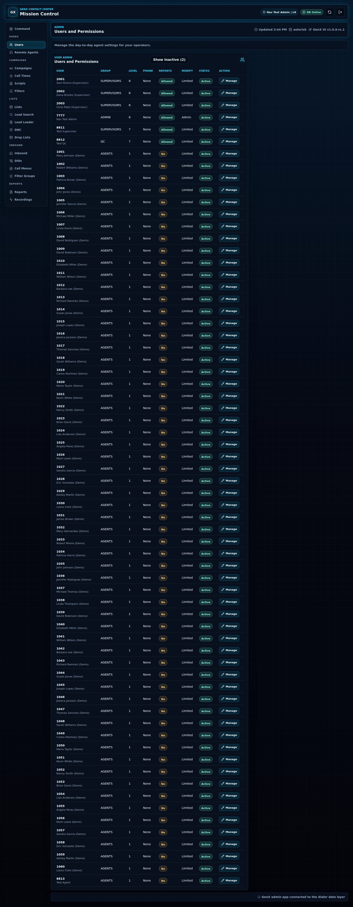
Users and Permissions — one row per account you're allowed to see.
These are the login accounts for your agents (and other managers at or below your level — higher-level accounts are hidden from you). The columns show each user's group, level, phone login, whether they can view reports, and whether the account is active. Inactive users are hidden by default — use Show Inactive to reveal them.
Editing a user
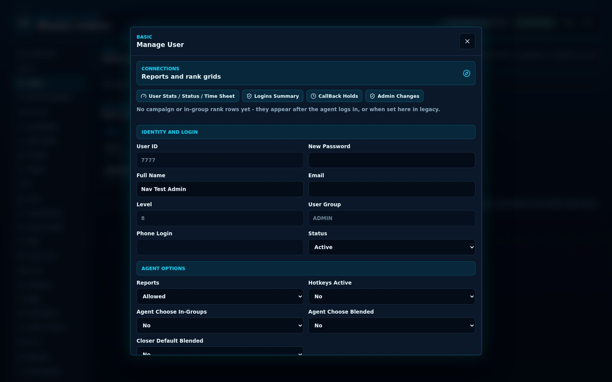
The Manage User editor as a floor manager sees it.
- Click Manage on the user's row.
- Change what you need (fields below), then click Save.
- The agent must log out and back in to pick up permission-type changes.
| Field | What it means |
|---|---|
| User ID | The login username. Fixed once created — shown greyed-out. |
| New Password | Type here only when resetting a password; leave blank otherwise. |
| Full Name | Display name used in reports and agent lists. |
| Optional contact email. | |
| Level / User Group | The account's rank and permission group. Read-only for floor managers — ask your administrator to change these. |
| Phone Login | The phone/webphone the agent's audio uses. Usually set once per workstation; leave it alone unless you know the phone entry. |
| Status | Active = can log in. Set to inactive to disable an account without deleting anything. |
| Reports | Whether this user may open the reporting pages. |
| Hotkeys Active | Lets the agent hang up + disposition a call with one keystroke. |
| Agent Choose In-Groups | Whether the agent may pick which inbound queues they take at login, instead of getting the campaign default. |
| Agent Choose Blended | Whether the agent may toggle blended (inbound + outbound) calling at login. |
| Closer Default Blended | For closer/inbound agents: start in blended mode by default. |
The Connections strip at the top of the editor links to that user's stats, login history, callback holds, and admin-change audit trail.
Deactivate, don't delete
When someone leaves, set their Status to inactive. It blocks the login instantly while keeping their call history and stats intact for reports. (Floor managers can't delete users anyway — by design.)
Remote Agents
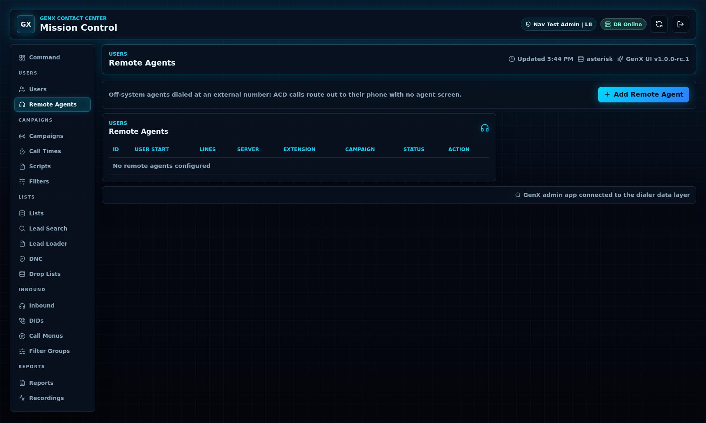
Remote Agents — forwarding calls to people who aren't logged in to an agent screen.
A remote agent is a phone number (like a cell phone) that receives dialer calls without the person using the agent screen. The dialer treats the entry as N always-available "agents" and forwards connected calls to the external number. You'll rarely need this; it exists for overflow or off-site staff. If you use it, remember the remote person gets no screen pop and no disposition step.
CampaignsCampaigns section
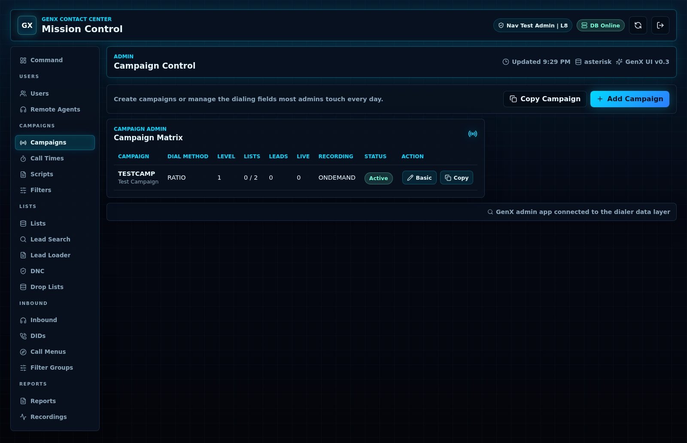
The Campaign Matrix — one row per campaign.
The matrix shows each campaign's dial method, dial level, attached lists (active/total), lead count, live calls, recording mode and status. Row buttons: Basic opens the editor below; Copy clones the campaign's settings into a new campaign — handy for starting a new project from a proven setup.
The campaign editor (Basic)
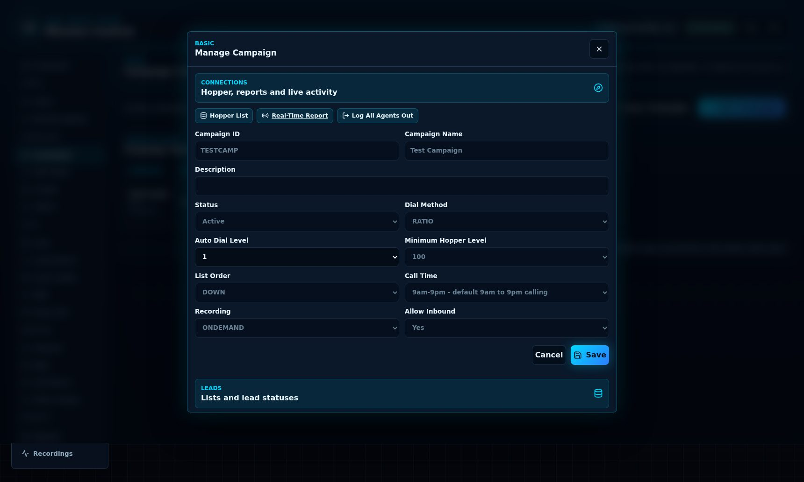
Manage Campaign — the fields floor managers touch day to day.
| Field | What it means |
|---|---|
| Campaign ID | Short fixed code (shown greyed-out once created). |
| Campaign Name / Description | Human-readable labels shown everywhere else. |
| Status | Active = agents can log in to it and it can dial. Set Inactive to shut a campaign down cleanly at day's end or between projects. |
| Dial Method | RATIO = automatic dialing at the level below. MANUAL = agents place each call themselves. Leave this alone unless you know why you're changing it. |
| Auto Dial Level | Lines dialed per waiting agent (the "speed knob"). Start at 1, raise gradually if agents sit idle, and watch your drop percentage as you go up. |
| Minimum Hopper Level | How many leads the system keeps staged and ready to dial. The default is fine for most floors; raise it for very large agent counts. |
| List Order | The order leads are pulled from lists (DOWN = oldest first, UP = newest first, plus randomized variants). |
| Call Time | The legal dialing window applied to every call — see Call Times. Always confirm this before starting a new campaign. |
| Recording | ALLCALLS/ALLFORCE = record everything, ONDEMAND = agents press record, NEVER = no recording. |
| Allow Inbound | Lets this campaign's agents also take inbound queue calls (blended). |
The Connections area at the top of the editor shows the lists feeding this campaign and links straight to its hopper, real-time report, outbound report, status breakdown, callback holds and admin-change log.
Log All Agents Out
The Log All Agents Out button in the campaign editor force-logs every agent off the campaign mid-call-cycle. It's for emergencies and end-of-shift cleanup when sessions are stuck — not something to click during normal dialing.
Watch your drops
Every time you raise Auto Dial Level, check the drop percentage in the Real-Time report over the next 15–30 minutes. Regulators cap abandoned-call rates; a level that looked fine with 20 agents can be too hot with 8.
Call Times
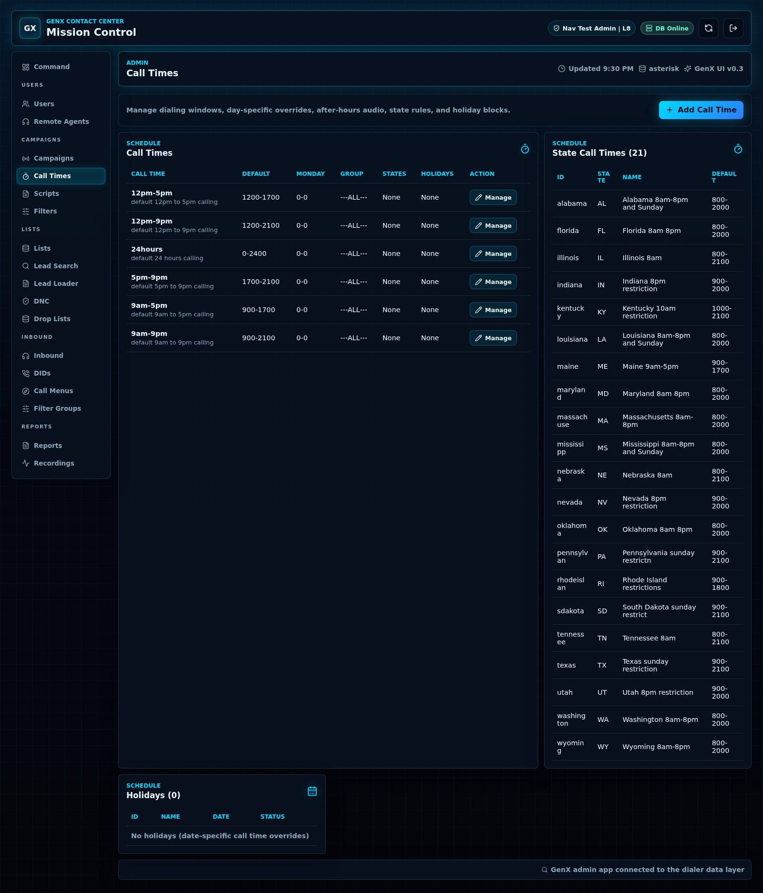
Call time schemes, per-state overrides, and holiday blocks.
A call time is a named dialing window — for example 9am-9pm —
that a campaign points at. The dialer converts every lead to the lead's own local time
and refuses to dial outside the window, so a New York lead and a California lead are each called
at sensible local hours automatically.
- Call Times table — the schemes you can attach to campaigns. Times are shown
in 24-hour format (
900-2100= 9:00 AM to 9:00 PM). - State Call Times — stricter per-state rules layered on top (e.g. states that forbid Sunday calling or cut off at 8 PM). These apply automatically when attached to a scheme.
- Holidays — date-specific blocks (e.g. no dialing on a national holiday).
Compliance lives here
Choosing the wrong call time on a campaign is one of the few mistakes that can create legal exposure. If you're unsure which scheme a new campaign should use, ask before dialing — don't guess.
Scripts
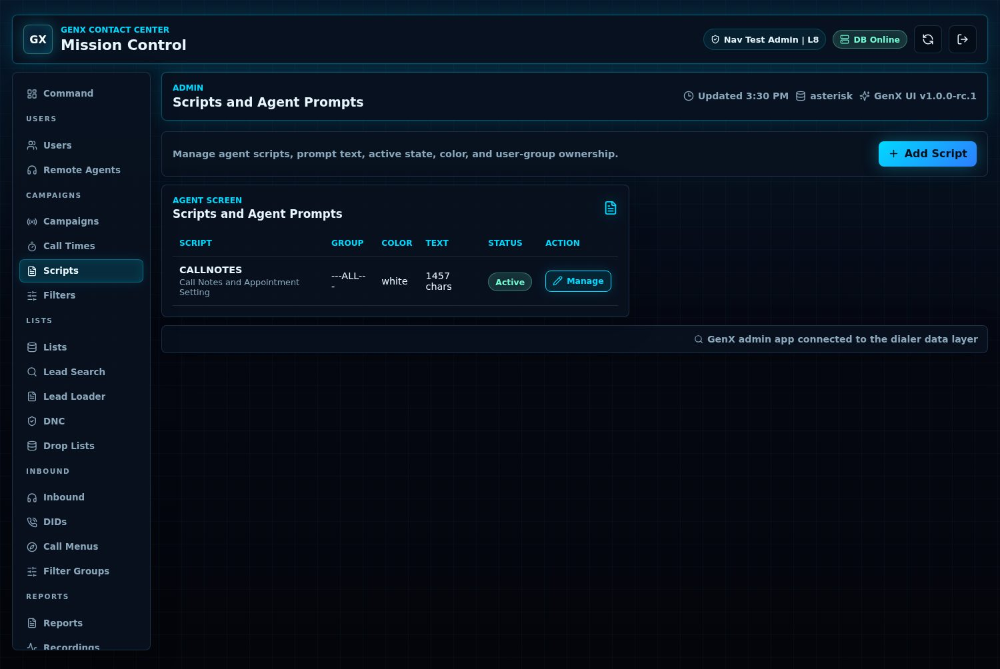
Scripts — the text agents read on screen during calls.
A script is the on-screen text an agent sees while on a call. Scripts can embed lead fields (the customer's name, city, etc.) that fill in automatically per call, so the agent greets "Hi, is this Maria?" instead of reading a blank template. Assign scripts on the campaign; edit their content here. Keep an inactive copy while drafting changes so you never edit the live script mid-shift.
Filters
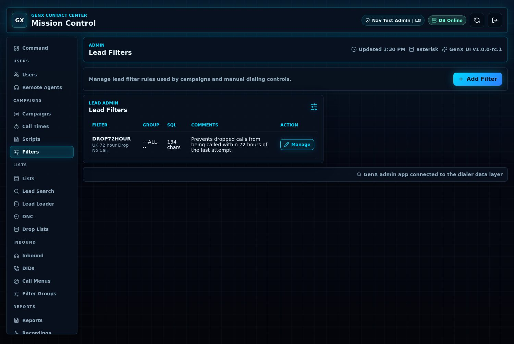
Lead Filters — rules that narrow which leads a campaign will dial.
A filter is an extra condition attached to a campaign — "only leads in these area codes," "skip leads called more than 5 times," and so on. Filters are written as database conditions and applied when the hopper loads. They're powerful but easy to get wrong: a bad filter silently stops all dialing. Treat this page as look-but-verify — coordinate with your administrator before changing filter logic.
ListsLists section
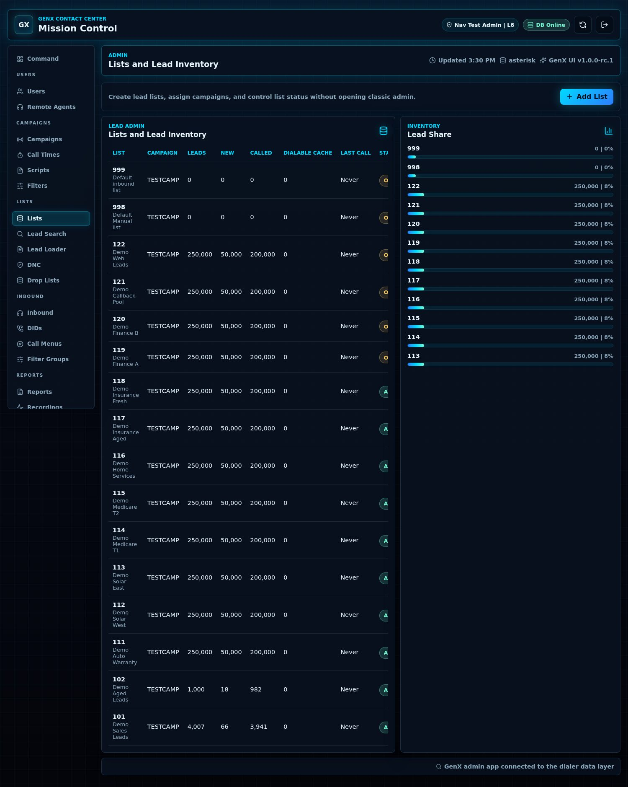
Lists and Lead Inventory, with the Lead Share panel on the right.
Every list row shows which campaign it feeds, its total leads, how many are NEW
(never dialed), how many have been called, how many are currently dialable, the last call time,
and whether the list is on or off. The Lead Share panel visualizes how your lead
inventory is spread across lists.
Managing a list
- Click Manage on the list row (or + Add List to create one).
- Set the list name and description so the floor can recognize it later.
- Point it at the right campaign.
- Flip Active on when it's ready to dial; off to stop it.
- Save.
Lists are your on/off switch
The cleanest way to control what is dialing is at the list level: campaign stays active, and you turn individual lists on and off. "Hopper 0 / nothing dialing" almost always means every list on the campaign is off, empty, or fully worked.
Lead Search
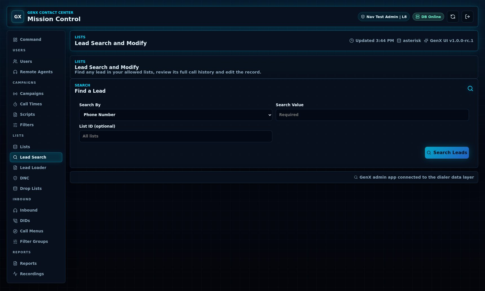
Find any lead you're allowed to see, then open and edit it.
- Pick Search By — phone number, lead ID, or name.
- Type the Search Value (for phone numbers, digits only).
- Optionally limit to one List ID.
- Click Search Leads. Matching leads appear below; open one to see the full record and its complete call history, edit fields, or change its status.
Typical uses: a customer asks to be called back at a different number (edit the phone), claims they already bought (check call history), or asks to never be called again (see DNC — don't just change the status).
Lead Loader
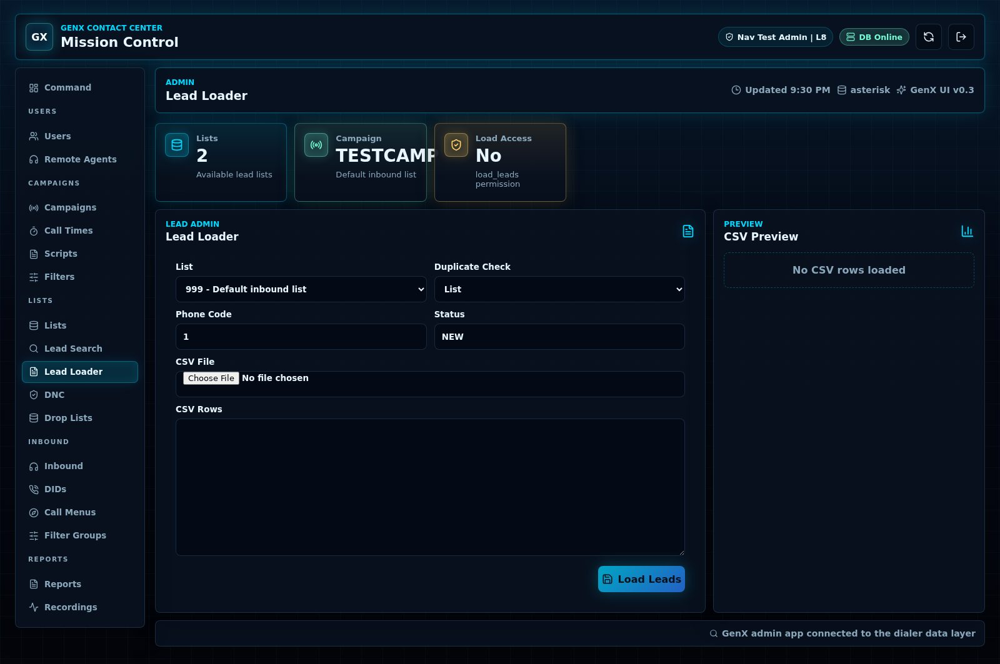
Load a CSV of new leads into a list.
This is how new phone numbers enter the system. You need a CSV file (a spreadsheet saved as comma-separated values) with one lead per row — at minimum a phone number column.
- Choose the destination List. Load into a fresh or clearly-named list — never mix a new vendor file into an old list.
- Set Duplicate Check: List (skip numbers already in this list), Campaign (skip numbers anywhere in the campaign), System (skip numbers anywhere at all), or none. When unsure, use Campaign.
- Leave Phone Code at
1for US/Canada numbers. - Leave Status at
NEWso the dialer treats them as fresh. - Click Choose File and pick your CSV (or paste rows into the CSV Rows box).
- Check the CSV Preview panel on the right — confirm the columns landed where you expect (phone in the phone column, names lined up).
- Click Load Leads and wait for the confirmation count.
Load Access card says "No"?
The Load Access card at the top shows whether your account has the lead-loading permission. Manager accounts have it enabled by default; if yours reads No, it has been turned off for your account — ask your administrator.
DNC — Do Not Call
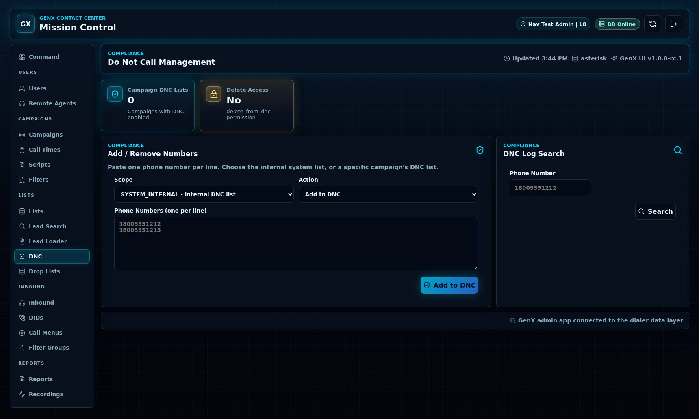
Add numbers to the DNC list and check whether a number is blocked.
When a customer says any version of "stop calling me," their number goes here — immediately, the same day. Numbers on the DNC list are never dialed again.
Adding numbers
- In Add / Remove Numbers, choose the Scope: the internal system-wide DNC list (blocks the number everywhere) or a specific campaign's DNC list. When in doubt, use the system list.
- Set Action to Add to DNC.
- Paste phone numbers, one per line, digits only.
- Click Add to DNC.
Checking a number
Use DNC Log Search on the right: enter the number, click Search, and you'll see whether it's on the DNC list and when it got there. Use this when a customer claims they already asked to be removed.
Removing numbers is restricted
The Delete Access card shows No for floor managers: you can add to DNC but not remove from it. If a number genuinely must come off the list, escalate to your administrator.
Drop Lists
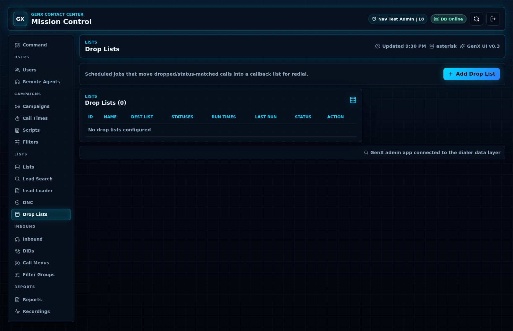
Scheduled jobs that recycle dropped or status-matched calls into a callback list.
A drop list is an automated job: on a schedule, it finds leads whose last call matched certain statuses (most commonly dropped calls — people who answered but got no agent) and moves them into a destination list for redial. It's how a floor makes sure dropped customers get a courtesy callback. Each row shows the destination list, the statuses it collects, its run times, the last run, and status. If the table is empty, none are configured.
Inbound GroupsInbound section
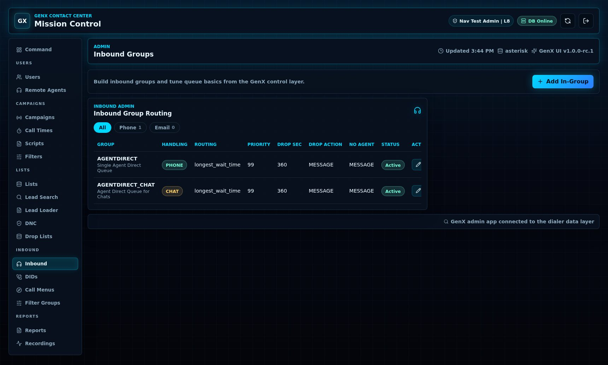
Inbound Group Routing — one row per queue, filterable by Phone / Email handling.
In-groups are your incoming-call queues. The table shows each queue's handling type
(PHONE or CHAT), routing rule
(e.g. longest_wait_time — the customer waiting longest gets the next free agent),
priority against other queues, the drop timer, and what happens when the timer expires or no
agent is available (play a message, go to voicemail, etc.).
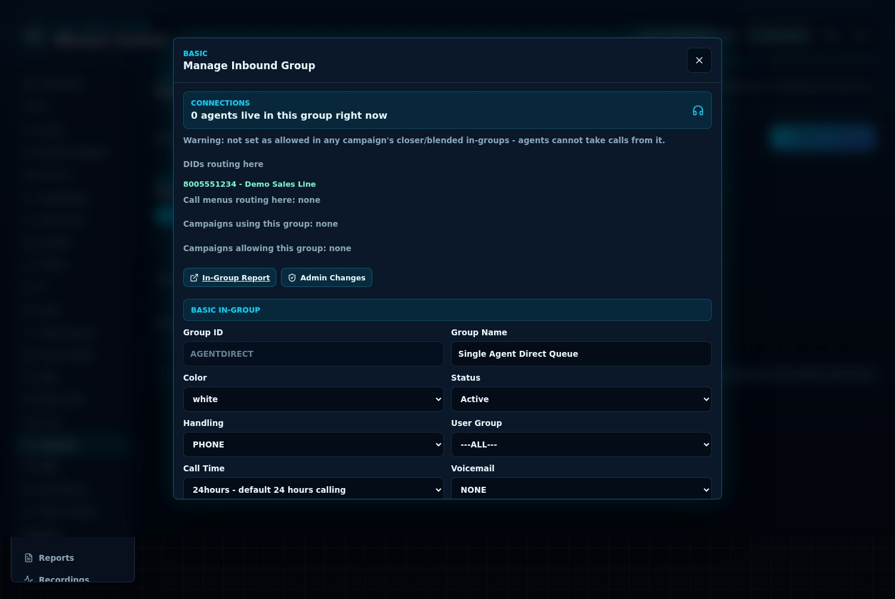
The in-group editor.
Click Manage to tune a queue: its name and active state, routing method, the drop timer (Drop Sec — how long a caller may wait), the drop action, hold music, and the no-agent behavior. Click + Add In-Group to build a new queue, then point a DID at it so calls actually arrive.
DIDs
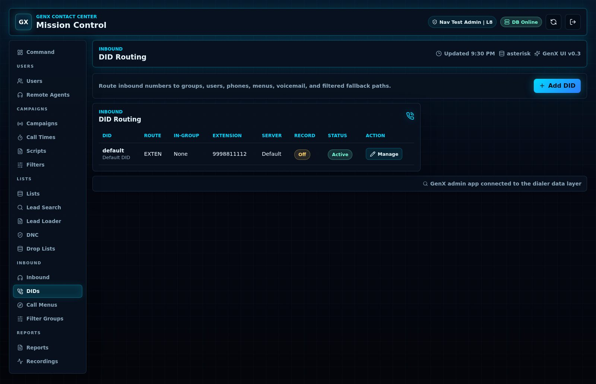
DID Routing — what happens to each inbound phone number you own.
Every phone number customers can call is listed here with its routing target. Typical routes: straight to an in-group (queue), to a call menu ("press 1 for…"), to a specific agent, or to an external number. To change where a number lands, Manage the DID and adjust its route — the change takes effect on the next call.
Call Menus
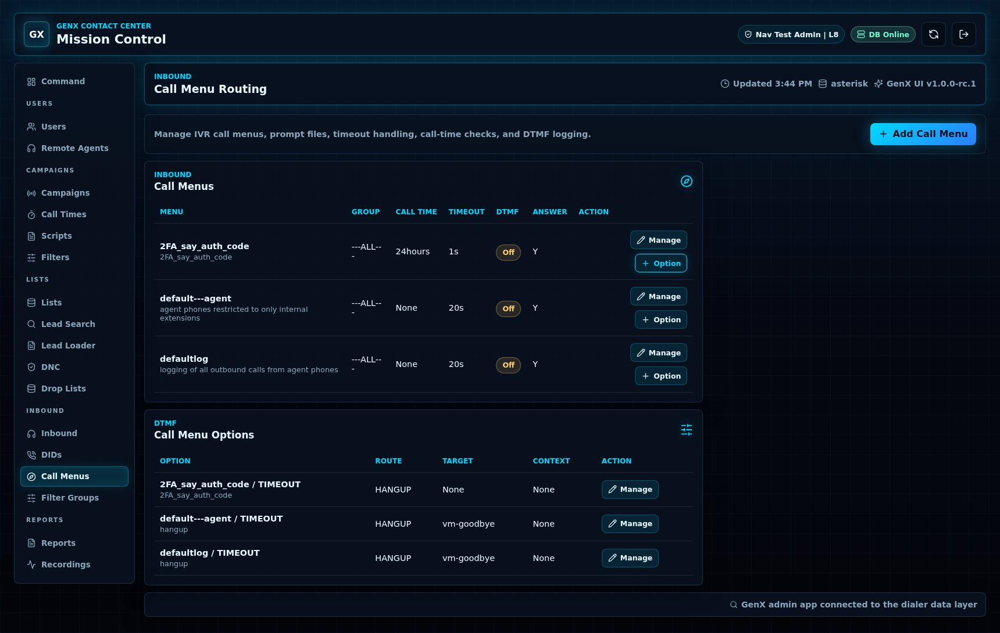
Call Menu Routing — the "press 1 for sales, 2 for support" trees.
A call menu plays a recorded prompt and routes callers based on the key they press. Each menu has a greeting recording, a timeout behavior (what happens if they press nothing), and one route per digit — to an in-group, another menu, a voicemail box, or an extension. Keep menus shallow: every extra layer costs you callers.
Filter Groups
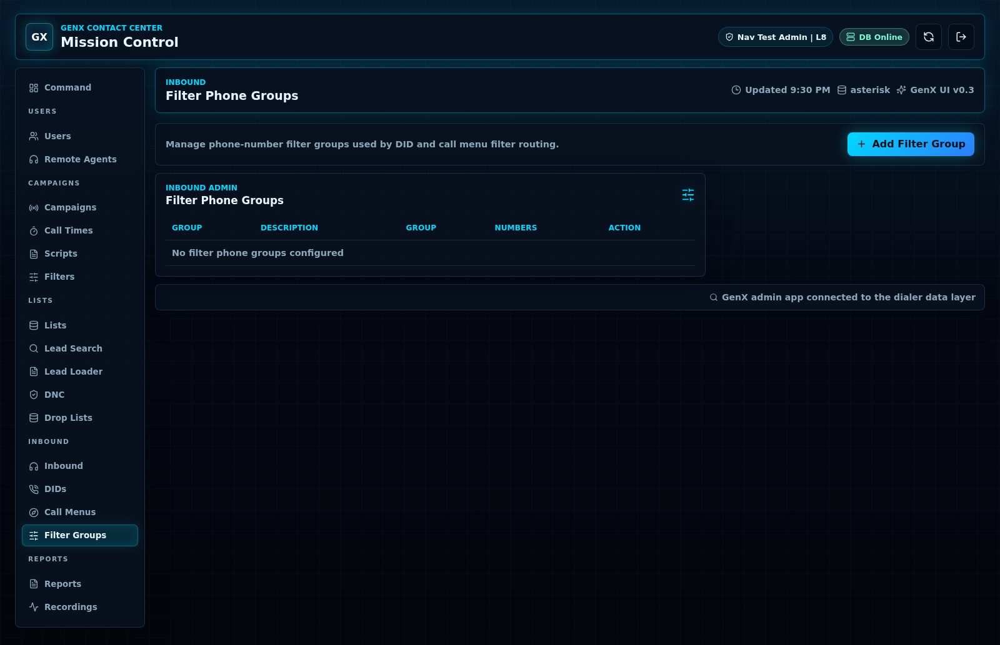
Filter Phone Groups — number lists used by inbound filtering.
These are named collections of phone numbers used to treat certain inbound callers specially — for example, a VIP list that skips the queue or a block list that never reaches agents. You'll mostly view these; changes are usually coordinated with your administrator.
ReportsReports section
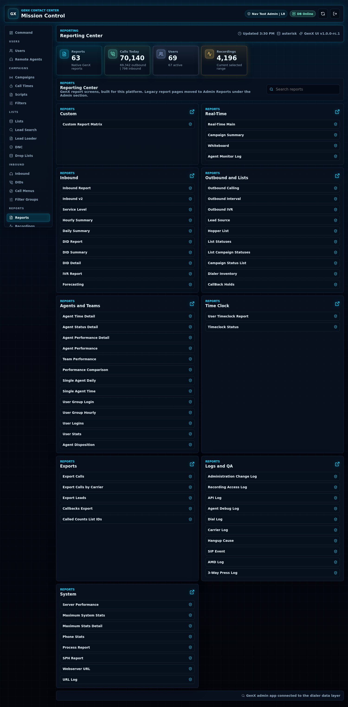
The Reporting Center: live panels on top, the full report catalog below.
The top of the page mirrors Mission Control for the selected date range (call flow, status mix, live agents, dialing surface). Below it, the Reporting Center catalogs every report, grouped by area — use the search box to jump to one by name. The ones you'll use most as a floor manager:
| Report | Use it for |
|---|---|
| Real-Time Main | The live floor board: who's on a call, who's paused, current drop rate. Keep it open on a wall monitor during dialing. |
| Campaign Summary | End-of-day campaign numbers: dials, contacts, drops, sales. |
| Outbound Calling | Outbound volume and outcomes over any date range. |
| Inbound Report / Service Level | Queue answer times, abandons, service level. |
| Agent Performance / Agent Time Detail | Per-agent calls, talk time, pause time, dispositions — your coaching data. |
| User Timeclock | Login/logout times for payroll-style tracking. |
| Exports | Download raw calls/leads as files for spreadsheets. |
Recordings
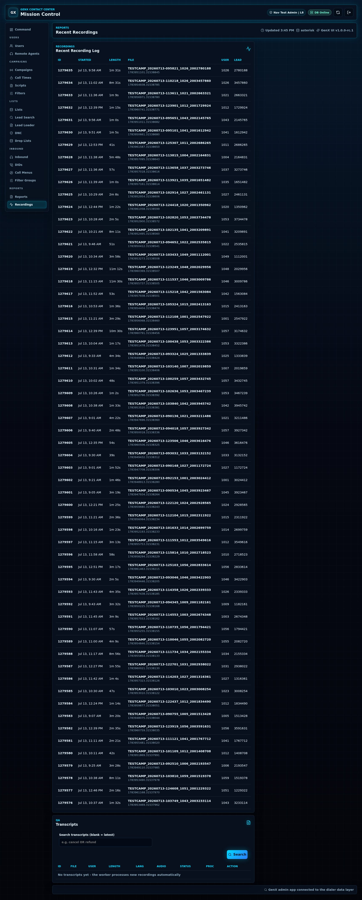
Recent recordings plus the searchable transcript library.
The Recent Recording Log lists the latest call recordings — when the call started, its length, the file, the agent, and the lead. Click a file to listen or download.
The Transcripts panel below it is the QA library: recordings that have been
transcribed to text. Search for words spoken on calls (e.g. cancel OR refund) and
click View to read the transcript alongside the audio. Blank search shows the
latest transcripts.
Finding a specific complaint call
Customer says an agent promised something yesterday? Search the transcript library for a phrase they quoted, or find the lead in Lead Search, open its call history, and match the timestamp against the recording log.
Everyday Tasks — Quick Recipes
| Task | Where / how |
|---|---|
| Reset an agent's password | Users → Manage → type a New Password → Save. Agent logs in with the new password immediately. |
| Disable a departed agent | Users → Manage → Status = Inactive → Save. |
| Speed dialing up / down | Campaigns → Basic → Auto Dial Level. Small steps; watch drops in Real-Time Main. |
| Stop a campaign now | Campaigns → Basic → Status = Inactive → Save. (Or switch its lists off to stop feeding the hopper while agents finish current calls.) |
| Load a new lead file | Lead Loader — see the numbered steps. Verify the preview before loading. |
| Customer says "stop calling" | DNC → Add to DNC (system scope), same day. |
| Fix a wrong phone number | Lead Search → find the lead → edit the phone field → Save. |
| Check yesterday's numbers | Reports → Campaign Summary (or Outbound Calling) with yesterday's date range. |
| Listen to a call | Recordings → find it in the log or search the transcripts. |
| Nothing is dialing — checklist | 1) Campaign Active? 2) Lists on and holding NEW leads? 3) Agents logged in and not paused? 4) Inside the campaign's Call Time window? 5) Hopper above zero on the Dialing Surface? |
What You Can't Do (and Who to Ask)
The ADMIN floor-manager role is deliberately scoped to day-to-day operations. The following are reserved for system administrators — if you need one of them, that's your escalation:
- No Admin section — user groups, phones, shifts, servers, system settings, media tools and settings containers are not in your sidebar.
- Users — you can edit day-to-day agent settings, but not create or delete accounts, and not change a user's level or group. Accounts above your level are invisible to you.
- No deletes — campaigns, lists, users, in-groups, DIDs and similar records can be deactivated by you but only deleted by an administrator.
- Statuses — system-wide status definitions are admin-only.
- Queue Groups — visible on the Inbound page but read-only for floor managers.
- DNC removals — you can add numbers, not remove them.
- API access — the developer API is limited to dedicated integration accounts.
Changes take effect at next login
Permission and navigation changes (yours or an agent's) apply the next time that person logs in — not to sessions already open.